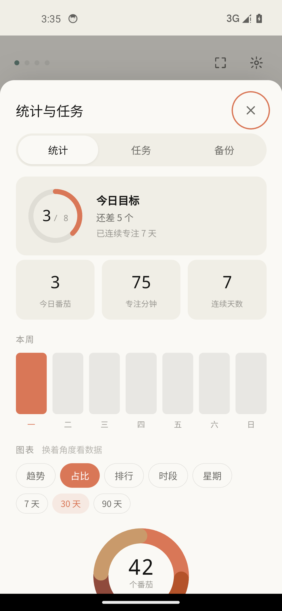
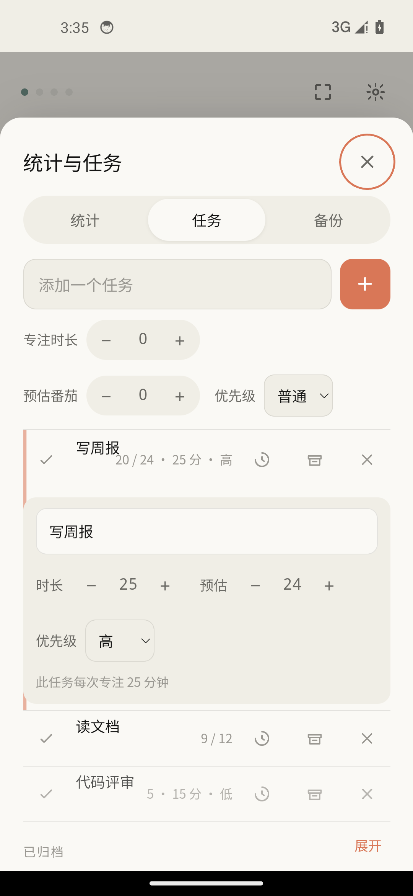
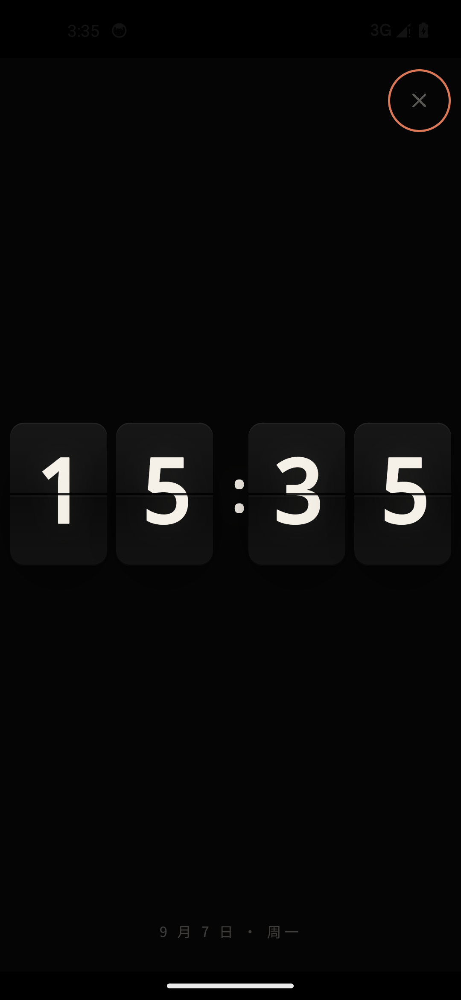

为什么是它
没有账号体系，没有社交，没有广告，也没有"开通会员解锁"。它只回答一个问题：这 25 分钟，你专注了吗。
专注开始那一刻就向系统注册精确闹钟（setAlarmClock），Doze 省电不迟到、不静默；锁屏全屏提醒，通知上直接「开始下一阶段」。倒计时走完自动转加时正计时，超出部分也计入专注。
趋势折线、任务占比饼图、任务排行、24 小时时段热图、星期分布——五种视角 × 7/30/90 天范围，每一次专注都会出现在最近记录里。
不要任何网络权限，连 INTERNET 权限都没有。备份导出 JSON / Markdown，换机随时带走；恢复前自动留底，可回滚。
添加、改名、删除、归档；给每个任务设专属专注时长与预估番茄数。不建任务也照常统计，记作「自由专注」。
纯黑底机械翻页卡片，带中缝与翻落动画。计时中显示剩余时间，空闲时就是一面床头钟，屏幕常亮。
雨声、傍晚咖啡馆，全部由 WebAudio 实时合成，一个音频文件都不带。伴随专注自动播放，暂停即停。
看得见的坚持



床头钟
点一下右上角，进入纯黑全屏。数字卡带着机械中缝翻落，OLED 屏幕上安静得像什么都没发生。计时模式显示剩余时间，空闲时显示当前时间。
现在开始
也可以到 Releases 页挑选历史版本，
或直接从源码构建：git clone → npm install → npm run apk